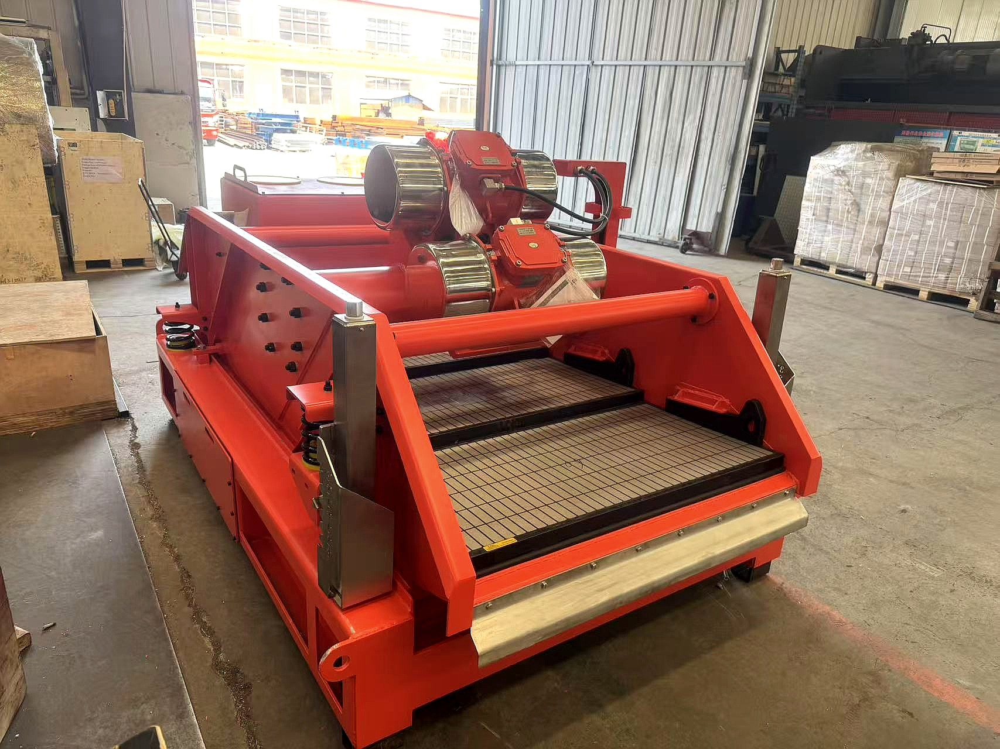

Shale Shaker
Professional Solids Control Equipment
The Shale Shaker is the first and most important stage of solids control equipment in drilling fluid processing. It removes large drilled cuttings from the drilling fluid before it flows to downstream equipment, protecting subsequent processing stages and maintaining optimal mud properties.
CHINA KOMAL shale shakers feature advanced linear motion or balanced elliptical motion design, offering high-efficiency solids removal with minimal fluid loss.
Available Models
K/Z-697 - Heavy Duty Shale Shaker
Flow Rate: 140 m³/h (610 gpm) | G Force: ≤7.0G | Screens: 3 pcs
Ideal for heavy mud and high-load drilling conditions. Features mechanical deck angle adjustment and stainless steel bottom tank for extended service life.
K/Z-635M - Linear Motion Shaker
Flow Rate: 140 m³/h (610 gpm) | G Force: ≤7.5G | Screens: 3 pcs
Advanced linear motion design with high G-force for efficient cuttings removal. Heat-treated frame for durability under extreme conditions.
K/Z-585 Pro - High Capacity Shaker
Flow Rate: 160 m³/h (700 gpm) | G Force: ≤7.5G | Screens: 4 pcs
Highest capacity model with 4-screen design for maximum processing efficiency. Linear/balanced elliptical motion for versatile applications.
Key Features
- High G-Force Design - Up to 7.5G for efficient cuttings removal and dry discharge
- Adjustable Deck Angle - Mechanical adjustment for optimal performance in various conditions
- Stainless Steel Construction - Bottom tank and critical components for corrosion resistance
- Heat-Treated Frame - Overall heat treatment for high G-force operation
- Pre-Tensioned Screens - Quick screen replacement with pre-tensioned design
- Premium Components - SIEMENS, Schneider, ABB motors and electrical components available
- Explosion-Proof Certification - IEC Ex/ATEX/UL certified options for hazardous areas
- Large Screening Area - Up to 2.73m² for maximum processing capacity
Technical Specifications
| Model Range | K/Z-697, K/Z-635M, K/Z-585 Pro |
| Flow Rate | 140-160 m³/h (610-700 gpm) |
| G Force | ≤7.0G to ≤7.5G (adjustable) |
| Vibration Motor | 2×1.72kW to 2×1.86kW |
| Screen Area | 2.2m² to 2.73m² |
| Number of Screens | 3 or 4 pcs |
| Screen Size | 1053×697mm / 1251×635mm / 1165×585mm |
| Motion Type | Linear / Balanced Elliptical |
| Deck Angle | Mechanical adjustment |
| Bottom Tank | Stainless steel for extended life |
| Frame Treatment | Overall heat treatment for high G-force |
| Weight | 1660kg to 1800kg |
| Electrical Components | SIEMENS, Schneider, ABB (optional) |
| Certification | IEC Ex, ATEX, UL (optional) |
| Screen Type | Pre-tensioned screens for quick replacement |
Applications
- Oil and gas drilling rigs - Onshore and offshore operations
- HDD/Trenchless drilling - Mud recycling systems
- CBM drilling - Coalbed methane exploration
- Water well drilling - Large diameter boreholes
- Geothermal drilling - High temperature applications
- Construction piling - Foundation drilling operations
Interested in Shale Shaker?
Contact us for detailed specifications, pricing, and customized solutions
Request Quote View More Products